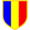

Flacăra Moreni a fost fondată în 1922 sub numele de Astra Moreni. In 1951 numele său a fost schimbat în Flacăra Moreni.
După o fuziune cu rivalul local Automecanica Moreni, în anul 1977 a fost numită Flacăra Automecanica Moreni, dar în 1985 a fost schimbat din nou în Flacăra Moreni.
Flacăra Moreni a jucat mai mult în Divizia B și Divizia C, dar în anul 1986 a promovat în Divizia A. În sezonul 1988/89 a terminat pe locul patru. Aceasta a însemnat calificarea în sezonul următor pentru Cupa UEFA, în care Flacăra Moreni în primul tur a fost eliminată de FC Porto cu scorul general de 4-1.
În sezonul 1990/91 Flacăra a retrogradat din Divizia A. După retrogradarea din Divizia B în 1995 si din Divizia C în 2007, Flacăra a jucat în Liga IV. Flacăra a promovat în Liga III pentru sezonul 2016-17.
| # | Denumire | Perioada |
|---|---|---|
| 1 | Flacăra Moreni | 1922–1950 |
| 2 | Astra Română Moreni | 1950–1977 |
| 3 | Flacăra Automecanica Moreni | 1977–1985 |
| 4 | Flacăra Moreni | 1985–prezent |
Culorile echipei Flacăra Moreni sunt galben si albastru.
Versurile imnului echipei:
...
Galben-albastru sunt culori frumoase,
Galben-albastru sunt victorioase,
...
Echipa utilizeaza in deplasari un echipament de culoare rosie.
|  | Liga I | Cea mai buna clasare: Locul 4 1988–89 |
| Liga II | Locul 1: 1985–86; Locul 2: 1951 | |
| Liga III | Locul 1: 1946–47, 1971–72, 1972–73, 1975–76, 1978–79, 1983–84; Locul 2: 1977–78, 2000–01 | |
| Liga IV | Locul 1: 2015–16; Locul 2: 2012–13, 2014–15 | |
| Cupa Uefa | Runda 1: 1989–90, eliminata de FC Porto |